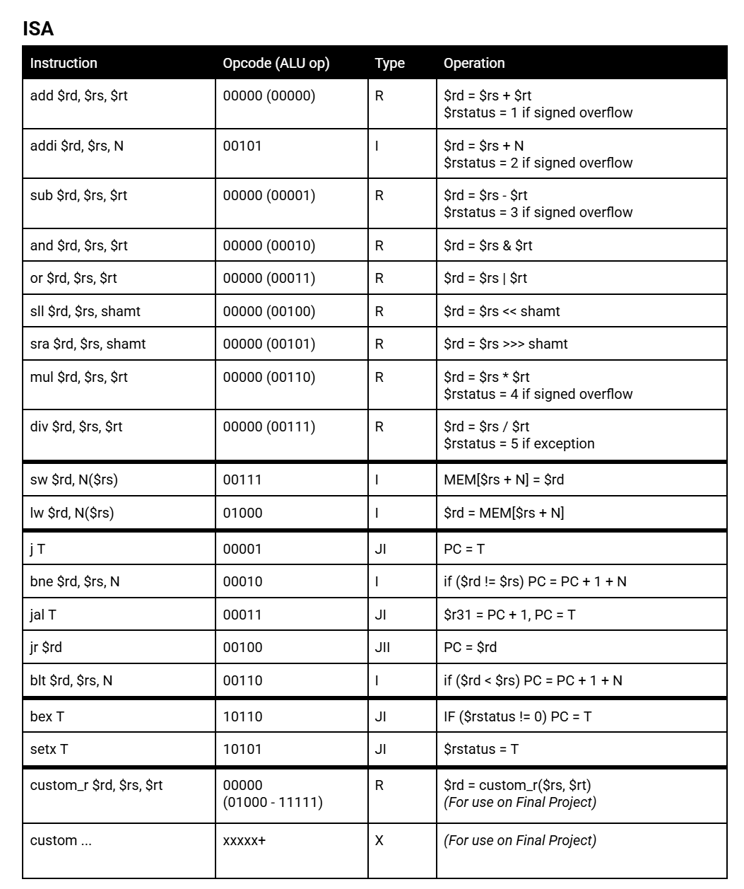
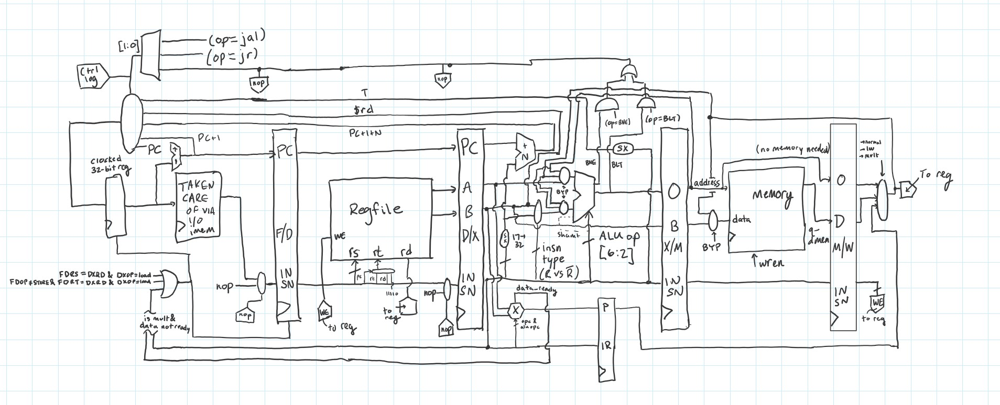

Project Overview
Computers work by executing a series of 'instructions'; the set of instructions that a computer can run is called the Instruction Set Architecture (ISA). All programming languages inevitably get translated down to a series of instructions in this ISA, so that the computer can execute the program. But how does the computer execute each instruction in the ISA? That is what I learned in this project, by designing and implementing a computer that implements a simple ISA. Because of its design (i.e. pipelining), it is able to run at speeds only 1 order of magnitude off of modern computers.
This CPU was made during the Digital Systems course at Duke University. It is a fully functioning 5 stage, pipelined, bypassed, hazard handling MIPS CPU. It was designed using Structural Verilog; hardware tests were written in Behavioral Verilog and software tests in the ISA. Its instruction set can be seen below.
MIPS ISA.
Technical Information
The CPU is a 32-bit processor that runs at 100 MHz. Features incorporated into the design include:
- 5-stage Pipeline
- Memory Bypassing
- Hazard Handling
- Carry Lookahead Addition/Subtraction
- Modified Booth Multiplier
- Non-Restoring Division
Below is a diagram I made while creating the CPU to show an outline of the datapath, not including the implementation and control of each component. It's also not 100% reflective of the final design, but relatively close.
Block diagram of the MIPS processor showing major components and data paths.